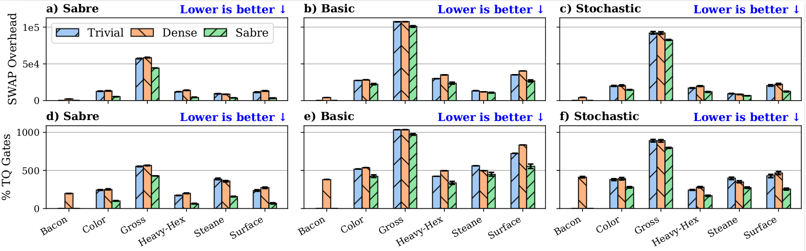
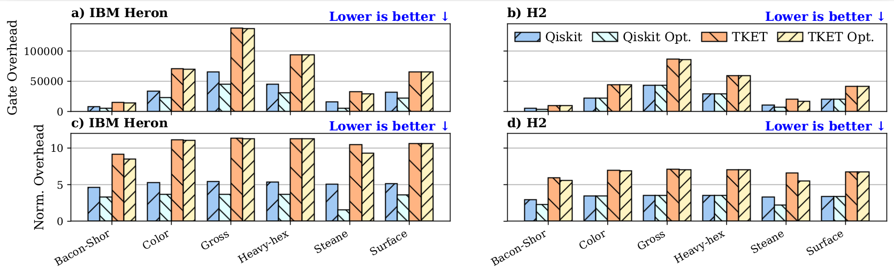

This section evaluates how the internal stages of the benchmarking framework—specifically mapping, routing, and translation—contribute to the overall overhead and effectiveness of QEC codes.
We show that mapping and routing stages add 134.095% more two-qubit gates on average due to SWAP overhead. In practical applications, this corresponds to just over four extra two-qubit gates for every original one, which greatly amplifies two-qubit errors.

Figure 1: Comparison of gate overhead introduced by different mapping and routing strategies.
Our investigation shows that even the most optimized translation into native gate sets introduces significant overhead, with an average of 3.166 additional two-qubit gates per original gate.

Figure 2: Gate count increase across various translation SDKs (Qiskit, TKET, BQSKit).